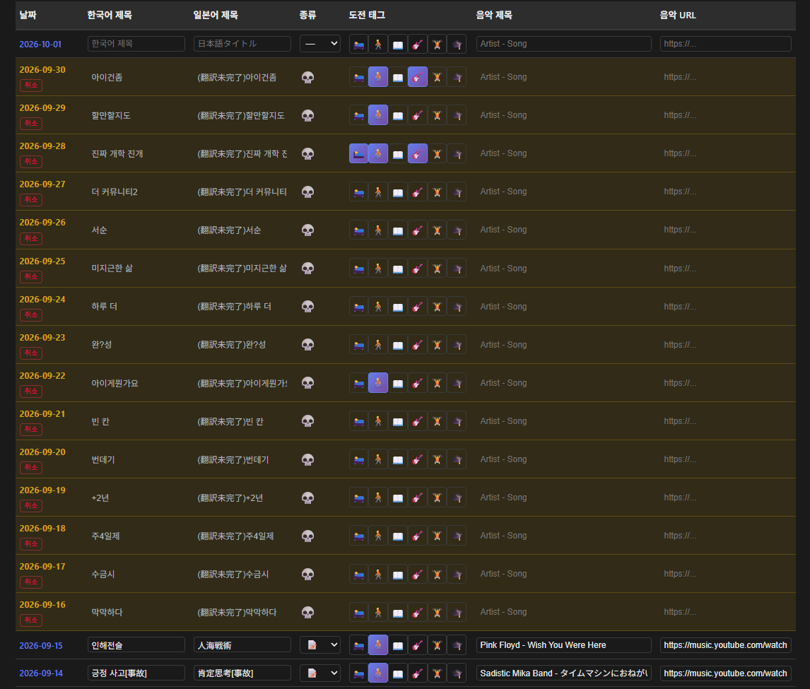

시원하게 버려버리기
9월 15일(실질적으로는 19일)을 마지막으로 일기를 쓰지 않았는데, 사실 업로드만 하지 않았을 뿐이지 RTS 가 있던 때와 마찬가지로 내용 자체는 모두 메모를 해 놓았었다.

진짜임하지만 1주 이상 지난 글에 대해서는 나중에 다시 쓰지 않겠다고 스스로 정한 것도 있고, 1주 이내라고 해도 네이버 블로그에서는 이미 날짜의 불일치가 명확하게 보이기 때문에, 그냥 어제까지의 메모들도 전부 삭제하기로 했다.
여기에는 날짜의 불일치 뿐만 아니라 다른 이유도 있는데, 이 기간동안의 내용은 거의 대부분이 최근 완성한 소설에 대한 이야기를 하고 있기 때문이다. 문예부의 활동으로서 작성한 글이나 작품은 이 블로그에 단 하나도 올린 적이 없다(사실 예전에 "구토"라는 제목의 시를 써본 적이 있기는 한데, 이건 문예부에 들어가기 전에 쓴 것이기도 해서 그냥 평소의 일기와 같은 형태로 업로드했었다). 그리고 이 작품들을 어떤 형식으로 올려야 할 지에 대해서도 매우 고민이 많다.
어쨌든 이 기간 동안의 글은 시원하게 버려버리고, 오늘부터 정상적으로 다시 시작하려고 한다. 하루 이상 지난 날짜에 글을 쓸 수 있는 기능 자체를 없애버릴 지에 대해서도 고민 중이다.